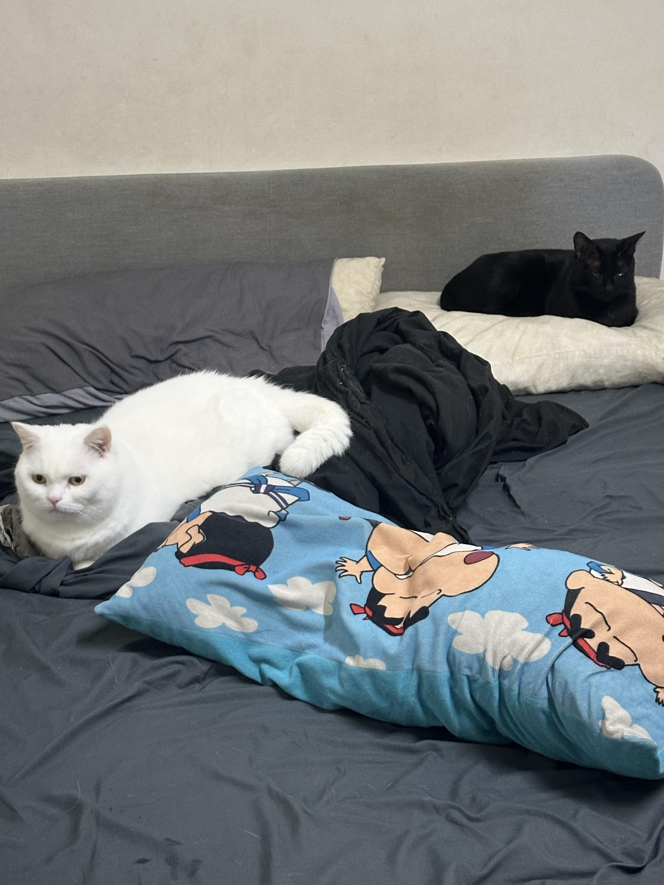

我的自我介紹
基本資料
大家好，我是
徐蔚杰
，目前就讀
淡江大學
資訊管理系，大六延畢。
我的興趣
打LOL、打瓦
陪我的貓咪炭吉和姆姆

看劇
學習經歷
年級
課程
內容
大一
程式設計
學 C 語言
大二
程式設計
學 C 語言
大三
程式設計
學 Java
大四
系選修
學管理相關
大五
補必修
程式設計等等
大六
網路程式設計
學 HTML
未來目標
希望可以順利畢業，不要沒有
畢業證書
聯絡方式
寄信給我
淡江大學首頁